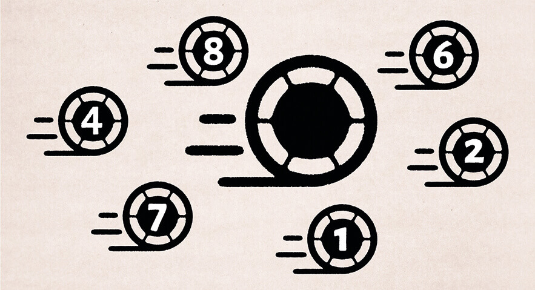
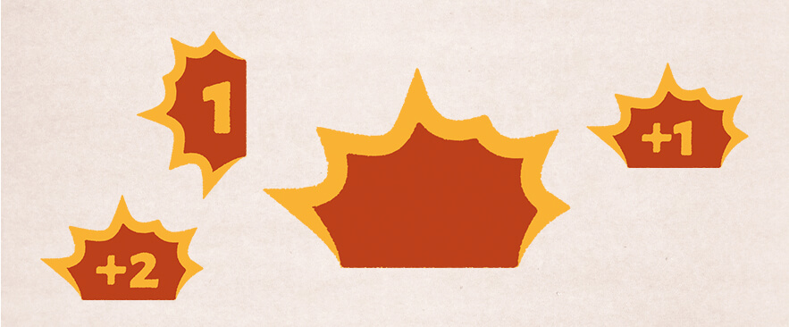
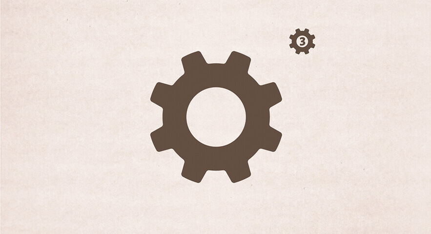
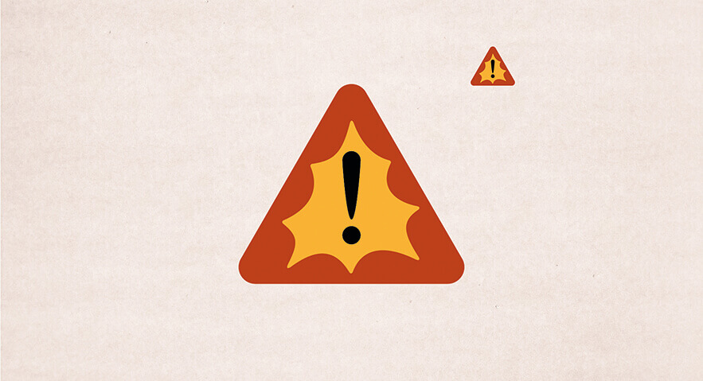
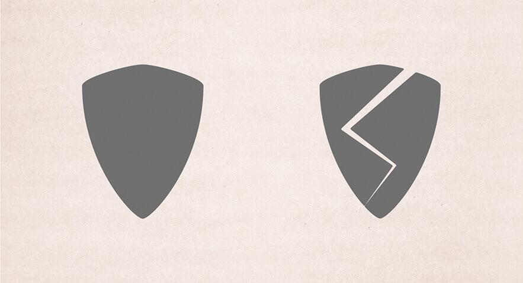
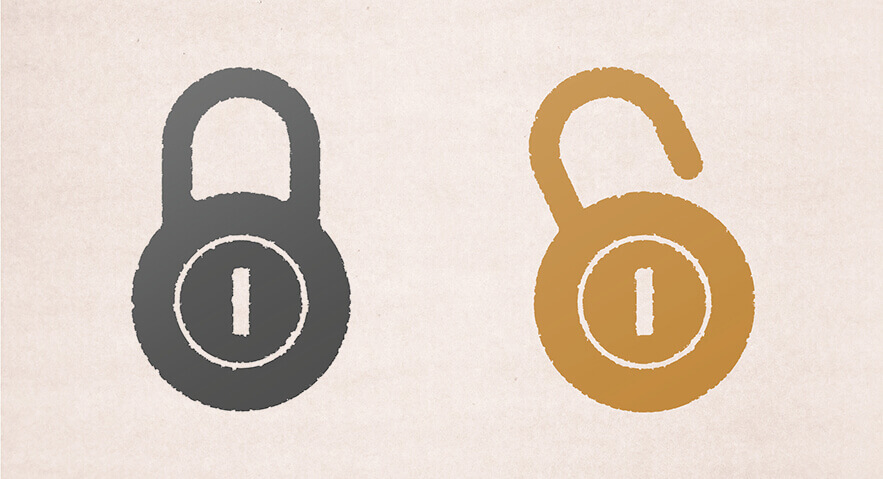

Robot Fight Club is a fast-paced game of kids fighting with robots in an abandoned futuristic academy.
When designing the icons for Robot Fight Club, we strove to make them fit in with the theme while being intuitive and easily distinguishable from each other. This was done through both shape and color.
The manoeuvre icon had to convey robotic movement, of robots with different ways to get around. Since the manoeuvre action also involves rotation in place, the icon had to include that. We decide on a wheel with short speed lines behind it. The middle of the wheel is big enough that there’s room for numbers conveying the amount of manoeuvre points gained.
We wanted to make the action icons fit in with the old, worn look of most components. Therefore, we imagined them being printed on their surface a while ago, with the print being frayed and worn along the edges.
The attack icon did not only need to be designed to work on it’s own to convey an attack action. It also had to be used in attack grids, showing which spaces will be hit by an attack, and from which direction the attack hits. This means that the icon needs to be able to convey direction. It also needs to have space for a strength modifier.
The colors for the attack icons are classical warning/damage colors, though they are muted a bit to work with the “retro futurism” color scheme of the game.
We wanted to make the action icons fit in with the old, worn look of most components. Therefore, we imagined them being printed on their surface a while ago, with the print being frayed and worn along the edges.
The special action icon doesn’t really convey anything specific, but rather to alert the player that there is additional information. A star can definitely be seen as something special, and the hexagonal outer shape makes it stand out from the other icons.
The color blue was chosen because it’s visually very different from the attack icons, and because it doesn’t immediately make you think of a specific action; It has the potential to be any type of action.
We wanted to make the action icons fit in with the old, worn look of most components. Therefore, we imagined them being printed on their surface a while ago, with the print being frayed and worn along the edges.
The scrap is represented by a cog. The hole in the middle was made big enough for a number to fit in, and the corners are a bit rounded to fit with the other, worn icons. We decided not to make these look worn because they represent an in-world object rather than a print.
The critical damage icon uses the same colors as the attack icon, and also a similar shape on the inside, because they are closely connected. Because it’s representing damage that is critical, the shape of a warning sign as well as an exclamation mark was used.
To represent armor, we used a simple shield because it’s easily recognizable. To represent broken armor we simply put a crack through the shield.
Apart from the icons in the game, we also made the lock icons for the stretch goals on the kickstarter for Robot Fight Club.
We drew inspiration from 50s locker padlocks, and made the color of both the locked and the unlocked one have a metallic look. We even made the locks have different colors to make it clearer which stretch goals were unlocked. The unlocked one is gold to make it really click that it’s a good and positive icon.
We decided to add the same worn look around the edges of the lock icons as on the action icons, to tie them together with the feel of the game.